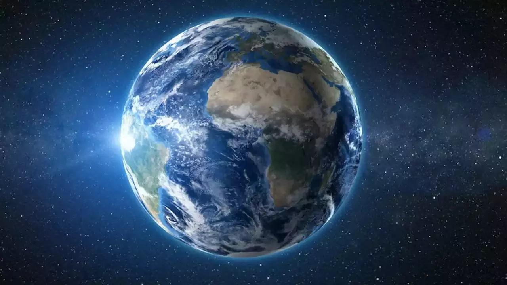

* # EARTH # *

Earth is the third planet from the sun and the only astronomical abject know to harbor life. While large volumes of water can be found throughout the Solar System, only Earth sustains liquid surface water. about 71% of Earth's surface is made up of the ocean, dwarfing Earth's polar ice, lakes, and rivers. The remaining 29% of Earths surface is land, consisting of continents and islands.
continents

A continent is any of several large landmasses. Generally identified by convention ratherthan any strict criteria, up to seven geographical regions are commonly regarded as continents. Ordered from largest in area to smallest, these seven regions are: Asia, Africa North America, South America, Antarctica, Europe, and Australia.you can check each continent by clicking on the below links.
Oceans

The ocean is the body of salt water that covers approximately 70.8% of the surface of Earth and contains 97% of Earth's water. An ocean can also refer to any of the large bodies of water into which the world ocean is conventionlly divided. Separate names are used to identify five different ares of the ocean: Pacific (the largest) , Atlantic, Indian, Southern (Antarctic), and Arctic (the smallest).
Food chain
Earth has vast number of living species. Every living thing, from one-celled algae to giant blue whale needs food to survive. The food chain describes who eats whoom in the wild. Each food chain is a possible pathway that energy and nutrients can follow through the ecosystem.

A food chain explains which organism eats another organism in the environment. The food chain is a linear sequence of organisms where nutrients and energy is transferred from one organism to the other. This occurs when one organism consumes another organism. It begins with the producer organism, follows the chain and ends with the decomposer organism. After understanding the food chain, we realise how one organism is dependent upon another organism for survival.